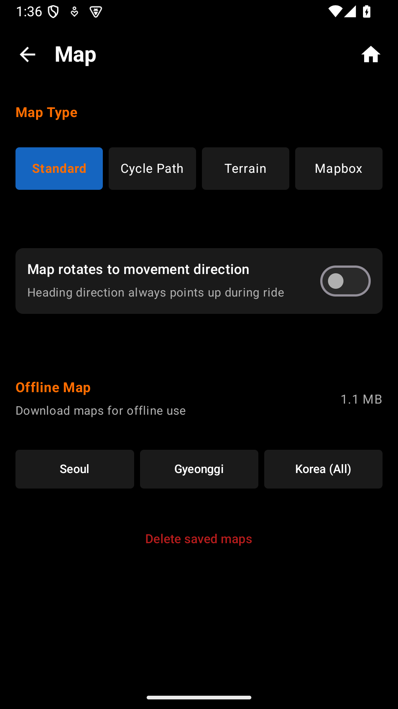

오라이더는 다양한 지도 스타일을 제공하며, 오프라인 지도를 미리 다운로드해서 데이터 없이도 사용할 수 있습니다.

라이딩 환경에 맞는 지도 스타일을 선택하세요. 설정 → 지도에서 변경할 수 있습니다.
| 유형 | 설명 | 추천 상황 |
|---|---|---|
| Standard (Mapnik) | 기본 OpenStreetMap 스타일 | 일반 주행 |
| Cycle (CyclOSM) | 자전거 도로 강조, 경사 표시 | 자전거 전용 도로 확인 |
| Terrain (OpenTopoMap) | 등고선, 지형 표시 | 산악/업힐 코스 |
| MapBox | 고품질 벡터 지도 | 깔끔한 시각 선호 |
셀룰러 데이터 없이 라이딩하거나 산간 지역에서 신호가 약할 때를 대비해 지도를 미리 다운로드하세요.
설정 → 지도에서 헤딩 잠금을 활성화하면 지도가 항상 이동 방향을 위로 향하도록 회전합니다. 내비게이션처럼 사용하기 편리합니다. 비활성화 시 북쪽이 항상 위를 향합니다.